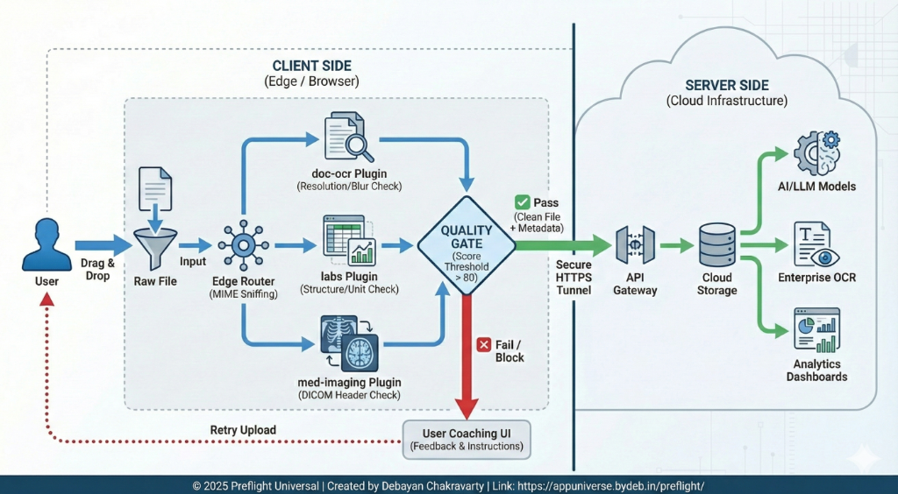

###### ###### ####### ####### ## ##### ###### ## ## #######
## ## ## ## ## ## ## ## ## ## ## ##
## ## ## ## ## ## ## ## ## ## ## ##
###### ###### ##### ##### ## ## ## ### ####### ##
## ## ## ## ## ## ## ## ## ## ## ##
## ## ## ## ## ## ## ## ## ## ## ##
## ## ## ####### ## ####### ##### ###### ## ## ##
Universal
Drag & Drop your files below for Intelligent Pre-Flight Validation.
Drop files here to validate
Preflight is the gatekeeper between raw uploads and your OCR / AI engine. Its goal is simple: no garbage in, so there is no garbage out.
Preflight catches these issues before the files reach storage and processing, and explains to the user how to fix them.
doc-ocr – documents, PDFs, generic images.xray-plus – X-ray style radiographs.med-imaging – CT/MR/US exports & DICOM stub.labs – lab reports (PDF/image/CSV/XLSX/HL7/FHIR).By blocking or warning on low-quality input, Preflight raises the average quality of data going into your OCR and AI stack, which directly improves the reliability of the final results.
Over time, this feedback loop dramatically reduces bad uploads and builds trust in the platform’s output.
See how Preflight validates data on the Edge / Browser before it ever touches your cloud.
